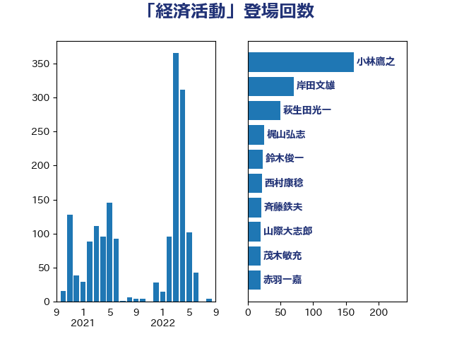

単語「経済活動」

| 小林鷹之 | 自由民主党 | 162 回 |
| 岸田文雄 | 自由民主党 | 71 回 |
| 萩生田光一 | 自由民主党 | 50 回 |
| 梶山弘志 | 自由民主党 | 25 回 |
| 鈴木俊一 | 自由民主党 | 23 回 |
| 西村康稔 | 自由民主党 | 22 回 |
| 斉藤鉄夫 | 公明党 | 21 回 |
| 山際大志郎 | 自由民主党 | 20 回 |
| 茂木敏充 | 自由民主党 | 20 回 |
| 赤羽一嘉 | 公明党 | 20 回 |
| 本庄知史 | 立憲民主党 | 18 回 |
| 田村まみ | 国民民主党 | 15 回 |
| 礒崎哲史 | 国民民主党 | 15 回 |
| 三浦信祐 | 公明党 | 13 回 |
| 麻生太郎 | 自由民主党 | 13 回 |
| 小泉進次郎 | 自由民主党 | 12 回 |
| 櫻井充 | 自由民主党 | 12 回 |
| 杉尾秀哉 | 立憲民主党 | 10 回 |
| 田村憲久 | 自由民主党 | 10 回 |
| 石川博崇 | 公明党 | 9 回 |
| 中山展宏 | 自由民主党 | 8 回 |
| 吉川沙織 | 立憲民主党 | 8 回 |
| 和田義明 | 自由民主党 | 8 回 |
| 林芳正 | 自由民主党 | 8 回 |
| 浅野哲 | 国民民主党 | 8 回 |
| 浜田聡 | NHK党 | 8 回 |
| 渡辺猛之 | 自由民主党 | 8 回 |
| 落合貴之 | 立憲民主党 | 8 回 |
| 高橋はるみ | 自由民主党 | 8 回 |
| 塩田博昭 | 公明党 | 7 回 |
| 牧山ひろえ | 立憲民主党 | 7 回 |
| 田村智子 | 日本共産党 | 7 回 |
| 足立康史 | 日本維新の会 | 7 回 |
| 井上英孝 | 日本維新の会 | 6 回 |
| 古川元久 | 国民民主党 | 6 回 |
| 國重徹 | 公明党 | 6 回 |
| 宮崎政久 | 自由民主党 | 6 回 |
| 後藤茂之 | 自由民主党 | 6 回 |
| 江田憲司 | 立憲民主党 | 6 回 |
| 石川大我 | 立憲民主党 | 6 回 |
| 福山哲郎 | 立憲民主党 | 6 回 |
| 緒方林太郎 | 無所属 | 6 回 |
| 藤田文武 | 日本維新の会 | 6 回 |
| 世耕弘成 | 自由民主党 | 5 回 |
| 伊藤岳 | 日本共産党 | 5 回 |
| 伊藤渉 | 公明党 | 5 回 |
| 大野泰正 | 自由民主党 | 5 回 |
| 太栄志 | 立憲民主党 | 5 回 |
| 小野泰輔 | 日本維新の会 | 5 回 |
| 岡田克也 | 立憲民主党 | 5 回 |
| 平井卓也 | 自由民主党 | 5 回 |
| 枝野幸男 | 立憲民主党 | 5 回 |
| 柴田巧 | 日本維新の会 | 5 回 |
| 森本真治 | 立憲民主党 | 5 回 |
| 河野義博 | 公明党 | 5 回 |
| 浅田均 | 日本維新の会 | 5 回 |
| 紙智子 | 日本共産党 | 5 回 |
| 藤川政人 | 自由民主党 | 5 回 |
| 里見隆治 | 公明党 | 5 回 |
| 井上信治 | 自由民主党 | 4 回 |
| 伊佐進一 | 公明党 | 4 回 |
| 佐々木紀 | 自由民主党 | 4 回 |
| 大串博志 | 立憲民主党 | 4 回 |
| 山岸一生 | 立憲民主党 | 4 回 |
| 平木大作 | 公明党 | 4 回 |
| 後藤祐一 | 立憲民主党 | 4 回 |
| 朝日健太郎 | 自由民主党 | 4 回 |
| 松野博一 | 自由民主党 | 4 回 |
| 柚木道義 | 立憲民主党 | 4 回 |
| 森山浩行 | 立憲民主党 | 4 回 |
| 浦野靖人 | 日本維新の会 | 4 回 |
| 片山大介 | 日本維新の会 | 4 回 |
| 篠原豪 | 立憲民主党 | 4 回 |
| 若宮健嗣 | 自由民主党 | 4 回 |
| 菅義偉 | 自由民主党 | 4 回 |
| 赤澤亮正 | 自由民主党 | 4 回 |
| 野田佳彦 | 立憲民主党 | 4 回 |
| 高木かおり | 日本維新の会 | 4 回 |
| あかま二郎 | 自由民主党 | 3 回 |
| ながえ孝子 | 無所属 | 3 回 |
| 中川宏昌 | 公明党 | 3 回 |
| 井野俊郎 | 自由民主党 | 3 回 |
| 佐藤啓 | 自由民主党 | 3 回 |
| 佐藤茂樹 | 公明党 | 3 回 |
| 古賀之士 | 立憲民主党 | 3 回 |
| 古賀友一郎 | 自由民主党 | 3 回 |
| 大西健介 | 立憲民主党 | 3 回 |
| 安江伸夫 | 公明党 | 3 回 |
| 宗清皇一 | 自由民主党 | 3 回 |
| 小田原潔 | 自由民主党 | 3 回 |
| 山本博司 | 公明党 | 3 回 |
| 山添拓 | 日本共産党 | 3 回 |
| 山谷えり子 | 自由民主党 | 3 回 |
| 岡本三成 | 公明党 | 3 回 |
| 徳永エリ | 立憲民主党 | 3 回 |
| 松川るい | 自由民主党 | 3 回 |
| 浜地雅一 | 公明党 | 3 回 |
| 渡辺周 | 立憲民主党 | 3 回 |
| 石井啓一 | 公明党 | 3 回 |
| 福田達夫 | 自由民主党 | 3 回 |
| 笹川博義 | 自由民主党 | 3 回 |
| 細田健一 | 自由民主党 | 3 回 |
| 美延映夫 | 日本維新の会 | 3 回 |
| 西村智奈美 | 立憲民主党 | 3 回 |
| 金村龍那 | 日本維新の会 | 3 回 |
| 鈴木貴子 | 自由民主党 | 3 回 |
| 長友慎治 | 国民民主党 | 3 回 |
| 高村正大 | 自由民主党 | 3 回 |
| 高橋千鶴子 | 日本共産党 | 3 回 |
| 鰐淵洋子 | 公明党 | 3 回 |
| 下村博文 | 自由民主党 | 2 回 |
| 中島克仁 | 立憲民主党 | 2 回 |
| 中西健治 | 自由民主党 | 2 回 |
| 中野洋昌 | 公明党 | 2 回 |
| 中野英幸 | 自由民主党 | 2 回 |
| 伊東良孝 | 自由民主党 | 2 回 |
| 伊藤孝恵 | 国民民主党 | 2 回 |
| 伊藤孝江 | 公明党 | 2 回 |
| 佐藤英道 | 公明党 | 2 回 |
| 勝部賢志 | 立憲民主党 | 2 回 |
| 古川康 | 自由民主党 | 2 回 |
| 吉川ゆうみ | 自由民主党 | 2 回 |
| 坂本哲志 | 自由民主党 | 2 回 |
| 坂本祐之輔 | 立憲民主党 | 2 回 |
| 塩川鉄也 | 日本共産党 | 2 回 |
| 大口善徳 | 公明党 | 2 回 |
| 大家敏志 | 自由民主党 | 2 回 |
| 大野敬太郎 | 自由民主党 | 2 回 |
| 宮下一郎 | 自由民主党 | 2 回 |
| 宮口治子 | 立憲民主党 | 2 回 |
| 宮本徹 | 日本共産党 | 2 回 |
| 寺田学 | 立憲民主党 | 2 回 |
| 小寺裕雄 | 自由民主党 | 2 回 |
| 小池晃 | 日本共産党 | 2 回 |
| 小沼巧 | 立憲民主党 | 2 回 |
| 山口晋 | 自由民主党 | 2 回 |
| 山口那津男 | 公明党 | 2 回 |
| 山本左近 | 自由民主党 | 2 回 |
| 山田賢司 | 自由民主党 | 2 回 |
| 新谷正義 | 自由民主党 | 2 回 |
| 杉久武 | 公明党 | 2 回 |
| 松原仁 | 立憲民主党 | 2 回 |
| 森屋隆 | 立憲民主党 | 2 回 |
| 橋本聖子 | 無所属 | 2 回 |
| 泉健太 | 立憲民主党 | 2 回 |
| 泉田裕彦 | 自由民主党 | 2 回 |
| 源馬謙太郎 | 立憲民主党 | 2 回 |
| 牧島かれん | 自由民主党 | 2 回 |
| 猪口邦子 | 自由民主党 | 2 回 |
| 田嶋要 | 立憲民主党 | 2 回 |
| 田村貴昭 | 日本共産党 | 2 回 |
| 盛山正仁 | 自由民主党 | 2 回 |
| 石井章 | 日本維新の会 | 2 回 |
| 石田昌宏 | 自由民主党 | 2 回 |
| 磯崎仁彦 | 自由民主党 | 2 回 |
| 竹谷とし子 | 公明党 | 2 回 |
| 笠井亮 | 日本共産党 | 2 回 |
| 篠原孝 | 立憲民主党 | 2 回 |
| 羽田次郎 | 立憲民主党 | 2 回 |
| 自見はなこ | 自由民主党 | 2 回 |
| 船橋利実 | 自由民主党 | 2 回 |
| 西岡秀子 | 国民民主党 | 2 回 |
| 西銘恒三郎 | 自由民主党 | 2 回 |
| 赤嶺政賢 | 日本共産党 | 2 回 |
| 遠藤敬 | 日本維新の会 | 2 回 |
| 酒井庸行 | 自由民主党 | 2 回 |
| 金子恭之 | 自由民主党 | 2 回 |
| 青柳仁士 | 日本維新の会 | 2 回 |
| 高良鉄美 | 無所属 | 2 回 |
| 黄川田仁志 | 自由民主党 | 2 回 |
| おおつき紅葉 | 立憲民主党 | 1 回 |
| 三木亨 | 自由民主党 | 1 回 |
| 三木圭恵 | 日本維新の会 | 1 回 |
| 上田清司 | 国民民主党 | 1 回 |
| 中川正春 | 立憲民主党 | 1 回 |
| 中西祐介 | 自由民主党 | 1 回 |
| 丸川珠代 | 自由民主党 | 1 回 |
| 井上貴博 | 自由民主党 | 1 回 |
| 井坂信彦 | 立憲民主党 | 1 回 |
| 今枝宗一郎 | 自由民主党 | 1 回 |
| 伊波洋一 | 無所属 | 1 回 |
| 伊藤俊輔 | 立憲民主党 | 1 回 |
| 住吉寛紀 | 日本維新の会 | 1 回 |
| 佐藤正久 | 自由民主党 | 1 回 |
| 倉林明子 | 日本共産党 | 1 回 |
| 前原誠司 | 国民民主党 | 1 回 |
| 加田裕之 | 自由民主党 | 1 回 |
| 北側一雄 | 公明党 | 1 回 |
| 北村経夫 | 自由民主党 | 1 回 |
| 吉田とも代 | 日本維新の会 | 1 回 |
| 吉田忠智 | 立憲民主党 | 1 回 |
| 嘉田由紀子 | 無所属 | 1 回 |
| 城井崇 | 立憲民主党 | 1 回 |
| 大石あきこ | れいわ新選組 | 1 回 |
| 太田房江 | 自由民主党 | 1 回 |
| 室井邦彦 | 日本維新の会 | 1 回 |
| 宮本周司 | 自由民主党 | 1 回 |
| 寺田静 | 無所属 | 1 回 |
| 小倉將信 | 自由民主党 | 1 回 |
| 小川淳也 | 立憲民主党 | 1 回 |
| 小熊慎司 | 立憲民主党 | 1 回 |
| 山下芳生 | 日本共産党 | 1 回 |
| 山口俊一 | 自由民主党 | 1 回 |
| 山崎正恭 | 公明党 | 1 回 |
| 山本香苗 | 公明党 | 1 回 |
| 山田太郎 | 自由民主党 | 1 回 |
| 山田宏 | 自由民主党 | 1 回 |
| 岡本あき子 | 立憲民主党 | 1 回 |
| 岩屋毅 | 自由民主党 | 1 回 |
| 岩渕友 | 日本共産党 | 1 回 |
| 工藤彰三 | 自由民主党 | 1 回 |
| 庄子賢一 | 公明党 | 1 回 |
| 志位和夫 | 日本共産党 | 1 回 |
| 斎藤洋明 | 自由民主党 | 1 回 |
| 新垣邦男 | 立憲民主党 | 1 回 |
| 木原誠二 | 自由民主党 | 1 回 |
| 木村次郎 | 自由民主党 | 1 回 |
| 末松義規 | 立憲民主党 | 1 回 |
| 本村伸子 | 日本共産党 | 1 回 |
| 本田顕子 | 自由民主党 | 1 回 |
| 杉田水脈 | 自由民主党 | 1 回 |
| 東徹 | 日本維新の会 | 1 回 |
| 松本洋平 | 自由民主党 | 1 回 |
| 柳本顕 | 自由民主党 | 1 回 |
| 根本幸典 | 自由民主党 | 1 回 |
| 梅村聡 | 日本維新の会 | 1 回 |
| 櫻井周 | 立憲民主党 | 1 回 |
| 武村展英 | 自由民主党 | 1 回 |
| 武田良太 | 自由民主党 | 1 回 |
| 比嘉奈津美 | 自由民主党 | 1 回 |
| 江島潔 | 自由民主党 | 1 回 |
| 河西宏一 | 公明党 | 1 回 |
| 津島淳 | 自由民主党 | 1 回 |
| 浜野喜史 | 国民民主党 | 1 回 |
| 清水真人 | 自由民主党 | 1 回 |
| 滝沢求 | 自由民主党 | 1 回 |
| 漆間譲司 | 日本維新の会 | 1 回 |
| 熊野正士 | 公明党 | 1 回 |
| 牧原秀樹 | 自由民主党 | 1 回 |
| 玉木雄一郎 | 国民民主党 | 1 回 |
| 田名部匡代 | 立憲民主党 | 1 回 |
| 畦元将吾 | 自由民主党 | 1 回 |
| 矢倉克夫 | 公明党 | 1 回 |
| 石井正弘 | 自由民主党 | 1 回 |
| 石井浩郎 | 自由民主党 | 1 回 |
| 石原正敬 | 自由民主党 | 1 回 |
| 石垣のりこ | 立憲民主党 | 1 回 |
| 神田憲次 | 自由民主党 | 1 回 |
| 神谷裕 | 立憲民主党 | 1 回 |
| 福島みずほ | 社会民主党 | 1 回 |
| 稲富修二 | 立憲民主党 | 1 回 |
| 簗和生 | 自由民主党 | 1 回 |
| 芳賀道也 | 国民民主党 | 1 回 |
| 若松謙維 | 公明党 | 1 回 |
| 葉梨康弘 | 自由民主党 | 1 回 |
| 薗浦健太郎 | 自由民主党 | 1 回 |
| 藤巻健太 | 日本維新の会 | 1 回 |
| 谷川とむ | 自由民主党 | 1 回 |
| 道下大樹 | 立憲民主党 | 1 回 |
| 遠藤良太 | 日本維新の会 | 1 回 |
| 重徳和彦 | 立憲民主党 | 1 回 |
| 金子恵美 | 立憲民主党 | 1 回 |
| 鈴木宗男 | 日本維新の会 | 1 回 |
| 長坂康正 | 自由民主党 | 1 回 |
| 長浜博行 | 無所属 | 1 回 |
| 長谷川岳 | 自由民主党 | 1 回 |
| 青山周平 | 自由民主党 | 1 回 |
| 青木愛 | 立憲民主党 | 1 回 |
| 音喜多駿 | 日本維新の会 | 1 回 |
| 馬場伸幸 | 日本維新の会 | 1 回 |
| 高木啓 | 自由民主党 | 1 回 |
| 鳩山二郎 | 自由民主党 | 1 回 |